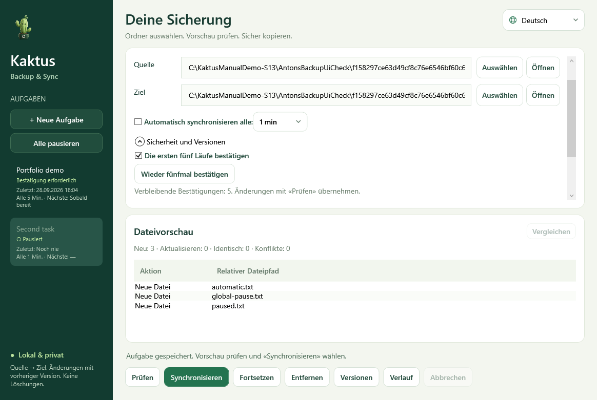

Windows · x64
Kaktus Backup & Sync
Einseitige Ordnersicherung mit Vorschau und Aufbewahrung früherer Dateiversionen.
Vorabversion · 5.2.0-preview.7Vor dem StartPortable-Paket enthält .NET; Python und SDK sind nicht nötig. Dies ist eine Vorabversion.


So funktioniert es
- Quelle auswählen
- Vorschau prüfen
- Einseitige Sicherung erstellen
Erste Schritte
ZIP vollständig entpacken und KaktusBackupSync.exe öffnen. Quelle und Ziel wählen, den Plan vor der Synchronisierung prüfen.